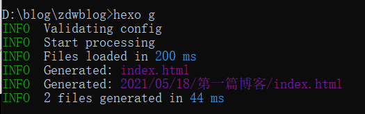
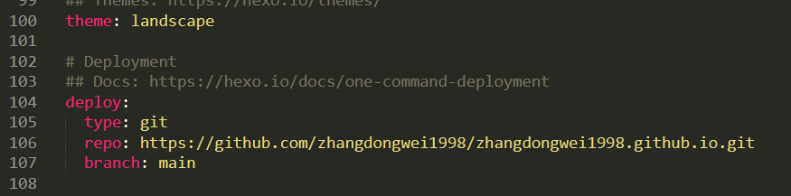

你好! 欢迎来到我的博客！我是一名在校学生，如果你对相关技术感兴趣或者有什么问题，请和我多多交流，一起进步。 这是我的GitHub主页。
简单搭建博客
这是我第一篇博客，不知道写些什么，那就写一下我搭建博客的过程吧。我参考了 B 站的视频和网上的一些教程，如果不正确请参考一下其他教程。
第一步：下载 git 和 Node
git 下载地址：https://git-scm.com/
node 下载地址：https://nodejs.org/en/
当在命令窗口输入：git –version 时，可查看 git 的版本，如果显示版本号，则 git 安装成功。如下：
当在命令窗口输入：node -v 时，可查看 node 的版本，如果显示版本号，则 node 安装成功。如下：
安装过程很简单，几乎只一直点击 next 即可。
第二步：下载 Hexo
Hexo 官方文档：https://hexo.io/zh-cn/docs/
安装：
使用 npm 命令安装 Hexo.在任意位置鼠标右键，选择“Git Bash Here”,打开 git 控制台，输入命令安装：
1 | $ npm install -g hexo |
配置：
新建博客文件夹，在该文件夹下打开命令窗口，输入一下命令进行初始化配置：
1 | $ hexo init |
第三步：本地启动 Hexo
1.输入以下命令进行生成博客。
1 | $ hexo g |
 2.启动本地服务器。
1 | $ hexo s |
本地服务器默认端口为 4000，则输入：http://localhost:4000/;即可看到博客主页。显示如下：
做到以上结果说明你已经完成了一半了，接下来就需要将自己的博客部署到 Github 上了。
第四步：部署到 Github 上。
1、申请一个 Github 账号。
2、创建一个仓库。
3、在_config.yml 进行配置。

repo: 后面是你刚才创建 github 的仓库地址。
注意 type：和 repo:的冒号后面要加引号。
url: 后面是生成的域名 url，部署后只需在浏览器输入该地址即可访问博客。
4、安装 hexo-deployer-git 自动部署发布工具。
1 | $ npm install hexo-deployer-git --save |
5、发布到 github 上。
在将博客部署到 github 上之前，你还需要将 SSH Key 添加到 GitHub，该步骤较简单，可参考其他教程。
1 | $ hexo d |
在部署的时候需要输入你的 github 账号和密码，请正确输入：
部署过程很快，几秒钟即可部署完成。
6、测试访问。
在浏览器输入：https://zhangdongwei1998.github.io/即可访问博客了。
第五步：写博客。
如果你想写更多博客，则需要在\Hexo\source_posts 文件夹下，新建 markdown 文件就可以写文章了。以后写文章只需要保存、生成、部署即可部署到 github 上了。
第六步：参考博客。
1、https://www.jianshu.com/p/189fd945f38f
2、https://blog.csdn.net/linton1/article/details/90137367
作者的话
我是一枚在校学习的小菜鸡，这是我的第一篇博客，内容写的比较粗略、简单，如果有错误的地方请多多包涵，也希望你能够提出更多宝贵意见和建议。